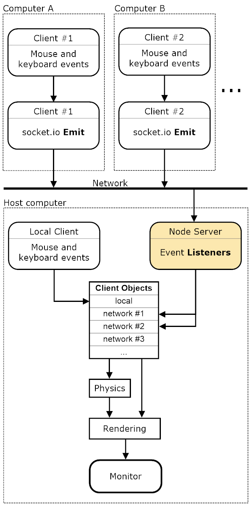
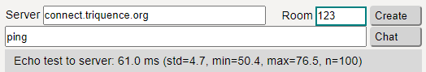

Multiplayer: node.js, socket.io, and Latency
(return) (springs & pucks)The demo page now contains multiplayer functionality. The approach is to collect mouse and keyboard events from the client device and deliver them to the host computer. All rendering is done on the host's screen (everyone must be in one physical room). Client mouse activity is detected when the cursor is over the blank canvas on the client's page.
This is like a game-console experience: social, multiple controllers, and with viewing on one screen. (As of October of 2017, the clients have the option to request a video stream from the host's canvas. This allows players to be outside the single physical room mentioned here and yet still play the game that is running on the host's canvas.)
The diagram here shows the overall dataflow from the network clients, to the node server, to the client objects in the game module on the host computer. Finally, the output of the physics engine is rendered to the HTML 5 Canvas and displayed on the host's monitor.
A host that has a large monitor or projection screen is always nice. Note you can host multiple rooms on one screen, side by side. Just open the demo (host) page in another browser window and start a new "room" for that second window.
The best performance, lowest latency, comes with installing a local node server on the host computer. The installation instructions are short (see section below). This local-node approach is the configuration shown in the diagram.
And if you're wondering about peer-to-peer connections and protocols like WebRTC, that will be introduced at the end of this page.
The networking magic is contained mostly in two files for the node server: package.json and server.js, and one file for the host and client pages: hostAndClient.js.
A Quick How-To
There's a remote node server running at Heroku. You can try this multi-player stuff (without installing your own node server) by connecting to the one at Heroku. It goes like this:- From the demo page, click the multi-player
checkbox (right side of the page).
- Type a short room name into the red input box (left side of the page).
- Optionally, type a nickname for yourself into the chat input box.
- Click the "Create" button. (It can take up to 10 seconds to wake up the Heroku
application.) You should see a chat message from the server indicating
you are the host of that room.
- Now open a client page in a new window. The easiest way to try this
out is to stay on one computer. But it's probably best to fire up the
laptop (or a second laptop) at this point and use it for the client
page. Use a link here or the one below
the multi-player toggle (on the right side of the demo page).
- Type in the same room name (as in step 2 above) into the red box on this client page.
Optionally, type a nickname for this client in the chat field.
Now click the "Connect" button. You'll get connection confirmation in the chat panel. Also the server
field will be populated with the address of the Heroku node application.
- For a laptop or pc, move your mouse over the rectangular video element on the client
page. It will be blank or a live stream (see streaming option in step 8). You should see your mouse position rendered as a small colored
triangle
(your new cursor) on the host's canvas (and also in your client's video
element if streaming). Try each of the three mouse
buttons to get differing mouse-spring strength (middle button is the
weakest).
- There are three additional connection options available from the
client page:
- Each connected client may initiate a live video stream of the
host's canvas. After connecting, click the "Stream" checkbox on the
client. This works best if the host and the clients are running
their monitors at the same refresh rate. Overall, Chrome is best for
streaming. If the client has limited cpu power (like a Raspberry
Pi), the stream will be significantly delayed. Any client without a
video stream must have direct line of sight to the host's screen.
- The Two-Thumbs touch screen interface, a virtual gamepad (see
image to the right), is
useful for controlling a game puck from a cell phone in demos 7 and
8 (Puck Popper). From your cell phone, or other touch-screen device,
open the client page in Chrome. Connect to the host as described
above, then click the "Two Thumbs" button. Your left thumb will
control the jet direction and intensity (more thrust the farther
your touch point is out from center dot). Right thumb fires and
aims the shooter. The center rectangle turns the shield on/off.
The colored rectangle, below the shield control, indicates your client color. Touch it, and a large circle will show around your puck (helping you to find it).
The small rectangle controls at the bottom require the alt rectangle to be touched first (this prevents accidental firing of these controls when driving the puck). These can be used to: get out of the full-screen mode (esc), freeze the object motion (f), restart the two Puck Popper games (7 and 8).
The scope control is located in the bottom right corner of the virtual gamepad. This control precisely rotates the shooter tube and shoots from a fixed position. Touching the center block stops the movement of your puck, and then shoots without recoil (and no rotation). The surrounding two blocks, rotate the shooter tube (ccw or cw). The rotation rate is reduced as the touch point approaches the center block.
- Combine these options to support cell-phone play in a separate
physical room. That, of course, will require two client devices, a
cell phone for the virtual gamepad, and a laptop or pc for the
stream.
- Each connected client may initiate a live video stream of the
host's canvas. After connecting, click the "Stream" checkbox on the
client. This works best if the host and the clients are running
their monitors at the same refresh rate. Overall, Chrome is best for
streaming. If the client has limited cpu power (like a Raspberry
Pi), the stream will be significantly delayed. Any client without a
video stream must have direct line of sight to the host's screen.
- There are "Full Screen" buttons on the host and client pages. These
put the animation canvas (or streaming video element) into full-screen
mode and give a nice front-and-center presentation of the action. My
favorite way to play Puck Popper is with the host in full-screen mode
and the client in Two-Thumbs mode. This all works best in Chrome. After
entering full-screen mode, the displayed element can be scaled up and
down with the ctrl +/- keys.
Latency
The Heroku server is in California or on the East coast somewhere. Speed-of-light limitations will be noticeable from the Midwest. You can measure the round-trip time with the ping features in the node-server and client scripts. Type the word "ping" into the chat field and then enter that or click the "chat" button. Here is a screen shot of a test from Minnesota to the Heroku server.

And here is a ping test to a node server running on a computer (a Raspberry Pi) on my local network.
It takes about 26% of the time (16ms compared to 61ms). You'll notice that reduced latency especially with mouse movements. If you install the local node server, as described below, you may also feel a more continuous, less jumpy rendering (fewer dropped packets).
If you enter "ping:host" in the chat field you'll get the time for a
round-trip time to the host and back (via the server). That's a four legged
path, client to server to host to server to client. Here's an example of
that type of ping where the client and host are on one computer and the node
server is at Heroku:
That takes twice as long as the base test and is about what is expected for a trip that's twice as far. This is the more rigorous test in that it travels the actual path to the host. If you divide this number by two you get the best estimate of the latency involved in our one-way communications with the host.
Installation of a Node Server
The following sections provide instructions for installing and running a local node server on Windows and Linux, and a remote server on the Linux environment at Heroku.
(Note that the local install offers the best performance if the node server is put on the host computer. But that's not absolutely necessary. It can go on any computer on your local network. I sometimes have several node servers running at home and just point the host and client pages at a particular server's IP address during testing.)
(Update: January 25, 2021. Browsers are now requiring equal security levels (https or http) for both the web server and node server. Therefore, to use a local http node server for local-network multiplayer game play, now requires that the html pages be served locally as http. An alternative approach is to change the local node server to serve on https, thereby not conflicting with the https at triquence.org. Also note, to simply test a local node server using http, have the host and client pages use https (triquence.org) while on the same computer as the node server; the node server can then be referenced using localhost:3000 and yet avoid the conflict.)
On Windows
Download the node installer for Windows here. Run the installer.
Download the node-server.zip file from here (this works best if you login to Google). Unzip it and copy or move the three files (package.json, server.js, and links.html) to a working directory where you wish to keep your node-server content.
Open a Windows command prompt and go to your working directory. Then enter the following:
npm install
Now start your node server by entering the following command (while still in that working directory):
node server.js
The first time you start the server you'll be asked for permission to go through the firewall. Agree to this. You're now ready to connect to your local server. Refer to the "After Installation" section below.
On Linux
First, install node.js on linux:
curl -sL https://deb.nodesource.com/setup_6.x | sudo -E bash
-
sudo apt-get install -y nodejs
Then enter the following command (from that directory):
npm install
Then run the node-server script (while still in that same directory).
node server.js
You're now ready to connect to your local server. Refer to the "After Installation" section below.
At Heroku
For many game situations a remote node server is just fine. The extra latency won't be noticed especially if you're not controlling objects with mouse movements. The same three files that are used for the local installations can also be used at Heroku. Here's how:
First, open an account at Heroku.
Download and Install the CLI (command line interface). Links to the Windows 32 and 64bit installers are on this page.
If you haven't already setup a working directory, download the node-server.zip file from here (this works best if you login to Google). Unzip it and copy or move the three files (package.json, server.js, and links.html) to a working directory where you wish to keep your node-server content.
Open the CLI using the Git CMD icon. Then go to your working directory (where you have the server.js, package.json, and links.html files). The little screenshot below shows what that looked like for me (I have a Git CMD icon on my desktop).
At that command prompt, login to heroku:
heroku login
Run these commands to initialize a local Git repository and commit your files to it:
git init
git add .
git commit -am "another update"
Run this command to create your new (blank) node application at Heroku:
heroku create
Finally, push your local code out to Heroku:
git push heroku master
That should do it. Now you can run the following command to open a browser and a little page being hosted by your node server. That page simply has links to the host and client. Make note of the URL for that page (it will be something like xxxxx-xxxxx-nnnnnn.herokuapp.com). That's the secret sauce you need to paste into the "Server" input box on the host and client pages.
heroku open
Updates to your Heroku application can be published by using these three commands. I like to put these in a little batch file so it's easy to push out changes.
git add .
git commit -am "another update"
git push heroku master
After Installation
The server.js script will activate all the socket.io event listeners that are needed to receive input from the clients.
Now you should able to point the host or client pages to the IP address of the computer on which you installed the node server. Do that by entering the node-server's IP address and port into the "Server" input box on the host or client page (e.g. 192.168.1.106:3000). You can also see this in the screen shots in the Latency section above. Then click the "Connect" button.
For the Heroku server, use the URL of the page that opens up after issuing the "heroku open" command. Copy everything after the "https://"; it should be something like xxxxx-xxxxx-nnnnn.herokuapp.com. Then paste that into the "Server" input box and click the "Connect" button.
You can restart your local node server at any time from the command line (in your working directory). Simply issue control-c twice. That should bring you back to the normal command line prompt. Then to start it again, just type "node server.js" as you did during the installation. After a server restart you will need to reconnect the host and clients. Always start with the host, then the clients.
WebRTC
WebRTC is a new technology that supports peer-to-peer (P2P) connections. It still requires an external server to be host to a signaling process in which the peer computers exchange credentials. Maybe the most compelling aspect about WebRTC is that you can use UDP (instead of TCP). That might offer better gaming performance especially with mouse movement. However, at this time it is significantly more complex for a developer to get WebRTC up and running. My target reader here is someone like a teacher that is working with a small group of students. And the local node server offers very good performance and is fairly straightforward to install. If you're developing a site similar to this one, you may want to stick with Node.js and socket.io for starters.
Having said that, in September of 2017 I added a WebRTC (P2P) layer on top of the socket.io approach described above. This exists, in the code, mainly side-by-side with the socket.io functionality; by that I mean I don't think it confuses the work described above. The WebRTC depends on socket.io for use in the signaling process, but doesn't change the socket.io implementation here. Here's a new page that discusses this. The ping-test result (below) is along the P2P connection to the u21 client. Fast! Even a little faster than the local-node-server result above.